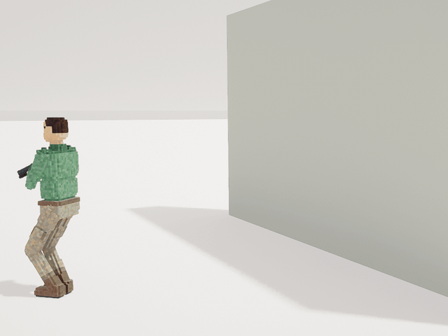

Dano de impacto
- NovoAgora quem é arremessado contra uma parede, um pilar ou o teto toma dano pela força da batida. Batendo a até 6 m/s não machuca; acima disso, são 6 de dano para cada m/s a mais (uma batida a 14 m/s tira 48).
- NovoVale para qualquer empurrão: bala, explosão, marreta, espada, Ceifador, Espadas de Pedra e monstros. O dano conta para quem te empurrou, e a armadura não segura.
- NovoDepois de uma batida forte, você fica preso na parede de 0,25 s a 0,8 s, sem atirar.
- JogabilidadeO empurrão de um companheiro não machuca pela parede, nem o seu próprio movimento (correr, dash ou voar). O Gancho também não: ele puxa.
- Visual e somArremessado, o player fica mole como um boneco de pano. Preso, fica apertado contra a parede e depois escorrega. A batida tem som, poeira e tremor na tela.